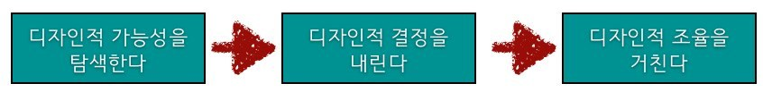
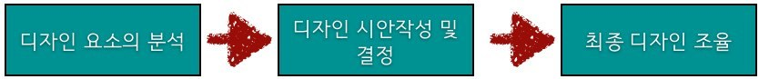
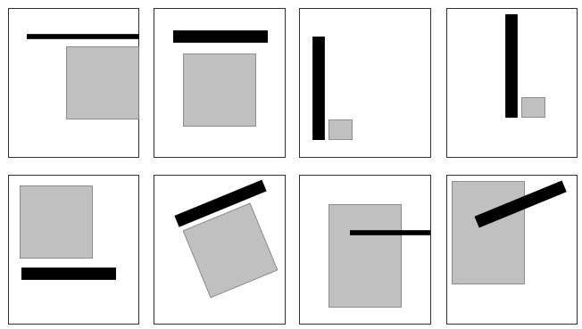
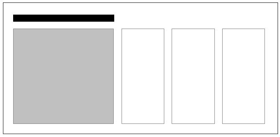
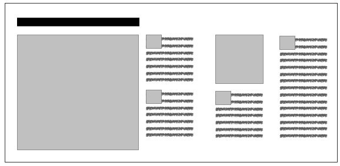
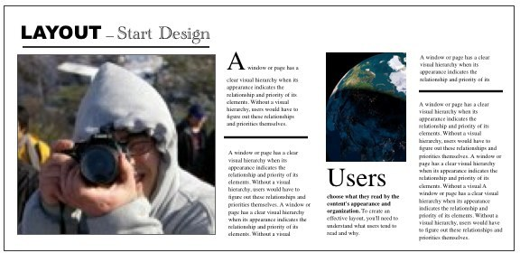

디자인의 시작 Layout
디자인의 시작 Layout - 기획적인 디자인을 해라
디자인이란 명제 안에 다양한 요소들이 있는데 오늘 Layout에 대해서 정리 하려고 한다.
무엇보다도 디자이너로써의 자질을 갖추지 못한 그냥 그런 기획자인 내가 디자인을 논한다는게 어불성설일 수 있을듯 하다.
하지만 그간의 경험과 책(DesignHowBook - 아주 오래된 책입니다.)의 도움을 많이 받아서 정리하는 마음으로 이야기를 만들고자 한다.
굳 디자인을 위한 시작점 Layout
레이아웃이란 단어를 듣게 되면 무엇보다 Grid에 짜여진 라인을 생각하게 된다.
그것도 그럴것이 어떤 오브젝트의 위치를 모아놓은것이 레이아웃이 아닌가 한다.
요즘은 UI와 UX의 관점으로 오브젝트(컨텐츠)를 나열하는것이 더 중요하다고 생각하는데 그것은 역시 사용성의 목적이 있을것이다.
레이아웃은 디자인의 시작점이다.
그것도 잘하면 굳디자인이 되는것이다.
그러면 내가 속해 있는 웹에서의 레이아웃은 어떤 역할일까?
요즘 웹상에서의 디자인을 보다가 보면 크게 두가지로 나눌 수 있을법 하다.
평범한 레이아웃과 평범하지 않은 레이아웃도 다 나름의 의미 전달을 위한것일뿐 어떤것이 좋고 나쁨은 없다 다만 선택의 중요도 일것이다.
레이아웃을 알기 위해서는 편집적인 부분에서의 레이아웃을 알아야한다.
책/편집 디자인에서의 레이아웃은 그 의미가 디자인의 거의 대부분을 차지 하는것 같다.
레이아웃을 어떻게 지켜냈는가를 표현하는 부분에서 다양한 의미를 제시 하는듯 하다.
레이아웃을 표현하는 단계를 보면 다음과 같은 프로세스를 거친다 한다.

각 단계의 세부 사항
1. 디자인적 가능성을 탐색한다.
- 작업을 위한 형태 선택
- 첫번째 라인에 대한 위치의 설정과 레이아웃
- 적절한 비례에 맞춘 라인의 모양결정
- 다양한 종류의 라인을 이용한 레이아웃
- 다양한 라인의 도입
- 다양한 형태의 라인을 위한 레이아웃과 위치설정
- 표제의 사이즈와 자간의 변화
- 다양한 서체 이용
- 서체의 컬러 적용
- 활자와 일러스트레이션/사진의 적용
2. 디자인적 결정을 내린다.
- 디자인과 구성결정
- 화면의 크기와 형태 결정
- 요소의 위치 선정
- 적절한 서체의 선택
- 적절한 컬러의 선택
- 정렬
3. 디자인적 조율을 거친다.
- 분야별 디자인 형태 변경
무엇보다도 프로세스의 단계가 웹의 디자인 작업과 비슷함을 느낄 수 있다.
웹디자인의 관점에서 본다면 다음의 프로세스로 함축해볼 수 있을듯 하다.
웹디자인의 프로세스

다시 레이아웃에 집중 하면, 중요한것은 분석이다.
편집이나 웹이나 마찬가지로 어떤것을 어떻게 보여주냐의 문제이기 때문에 무엇보다도 그 어떤것을 분석해야 한다.
요소(Element)의 분석
- 그것이 어떤 의미의 것들인지?
- 어떻게 표현되기를 바라는지?
- 표현에 의한 제약은 있는지?
- 샘플 또는 잘된예시가 있는지?
분석이 끝났다면 전체적인 레이아웃을 결정하기 위해서 기초 레이아웃을 결정한다.

다양한 형태의 기초레이아웃이 나올것이다.
이중 컨텐츠와 어울리고 디자인적으로 효과를 줄 수 있는 레이아웃을 선택 한다.

중간단계의 레이아웃을 설정한다.

실제 컨텐츠를 입히는 작업도 가능할것이다. 타이틀과 라인 등의 간결한 형태의 레이아웃의 선택이 가능하다.

기본적으로 3개의 단계를 거처서 완성한 페이지 인데 그럴듯 하지 않은가?
분석에 의한 레이아웃의 선택은 사용자에게 컨텐츠를 어떻게 전달해야 하는지에 대한 답을 전달 하고 있다.
레이아웃은 요소를 배치 하는것으로 끝나는것이 아닌 디자인의 시작인것이다.